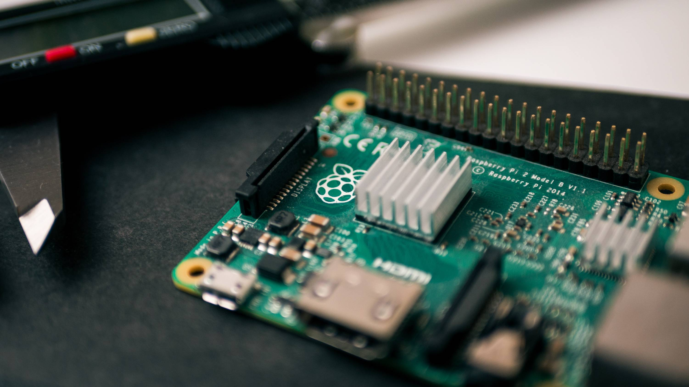

In this project 4 students and I created an interface on which users could see how many people are present in a room of a building. We realised this with 2 light sensors connected to a Raspberry Pi that measure at every door how many people walk through it, and in which direction they're walking (in or out of the room). We connected these measuring devices to a central database, our website then connects to the database to request the data and displays it.
This project was made to solve the problem of empty classrooms that weren't being used while other classrooms were overly full.
My main tasks in this group project were the configuration of the router (which was used to simulate the router of the school), and helping with writing the code for the measuring devices. I also made the documentation that had a clear overview of all of our configurations and resources.
Image of a Raspberry Pi Not only was this project technically challenging, but also on the level of soft-skills was it very interesting. We had to properly work together as a team to make sure that we were able to finish the project completely and in time. Agile working was also new to us, so it was very interesting to learn about all of the methods that this contains, such as scrum and pair programming; and applying these in a working environment.